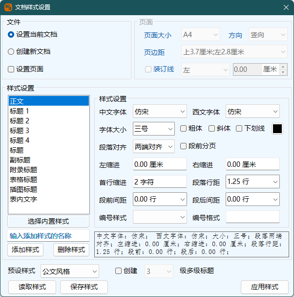

样式功能
Word Ribbon菜单格式助手中如下图所示部分可进行快速样式设置：
，单击该按钮，则可调出如下文档样式设置界面：
|  |
文件 可以选择使用当前文档设置格式或者新建一个文档设置。 页面 设置文档的页面尺寸，方向、页面边距以及装订线位置，程序默认读取当前文档的设置。默认页边距即为本程序默认设置的页边距，可以通过应用设置修改。 样式设置 左侧的列表框中列出了本程序预设的样式名称，同时隐藏的预设还包括标题4至标题9，当调整显示标题数时，可以显示或不显示这些样式，创建多级列表选中时，将根据显示的标题级数创建相应级数的多级列表。下方的预览框可以看到当前选择样式的字体及相关信息。样式设置内容，在Word程序运行中会暂时保存在内存中，重启Word程序后，相应的设置内容则会重置为初始设置。 读取文中样式 可以读取预设样式以及当前样式列表中包含的自定义样式，如果当前文档中存在该样式，则会读取文档中样式的设置，如果不存在则仍为默认设置；由于Word内置编号样式较多，但多数用不上，因此本程序并未全部包括，读取设置编号信息的标题样式，可能存在忽略掉的编号样式。 样式的新建和删除 当新样式名称框输入样式名称符合规则时，可以点击添加按钮增加样式。另外也可以删除用户自己创建的样式，但是不能删除程序预设的样式。 样式格式调整 单击样式列表框单个样式时，右侧样式相关内容将启用，按用户需求设置即可，修改缩进及行距等内容时，请注意单位；段落首行缩进的厘米数值和字符数值为互斥属性，设置一个另一个将自动重置为0； |
当选中多个样式时，可以同时调整选中样式的格式内容；选中多项时，下方的预览及信息框将只显示第一项样式的内容。
编号样式 编号样式只对标题1至标题9以及列表段落的内置样式生效，当多选包含标题1至标题9或列表段落时，编号样式均为可编辑状态，但尽管如此，更改的结果也只会保存到编号样式中，其余样式不受影响。
预设样式 程序预设的几种风格的文档样式，用户可以根据需求选择其中的样式进行调整。
设置/新建文档 点击后按照上述设置对当前文档或新建文档，并设置样式，如果样式为Word本身的样式则用本程序的设置修改样式，如果没有则新建该样式。
注意：
1. 本程序样式列表框中显示的样式及设置，在点击设置/新建文档按钮之前，只存在于本程序设置，不会修改Word本身的样式。
2. 本程序设置样式格式时，会根据正文样式的字体大小调整文档网格，即将行距设置为容纳正文字体大小的合适高度，其余行距设置均以此为基准。